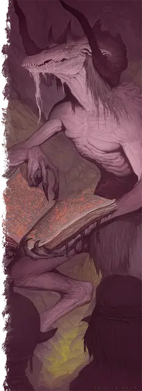

Баэрналот
Baernaloth
Большое Исчадие (Юголот), нейтрально-злое

Класс Доспеха 17 (природный доспех)
Хиты 256 (27к10 + 108)
Скорость 40 футов
| мод | спас | ||
|---|---|---|---|
| СИЛ | 19 | +4 | +4 |
| ЛОВ | 14 | +2 | +2 |
| ТЕЛ | 18 | +4 | +10 |
| мод | спас | ||
|---|---|---|---|
| ИНТ | 22 | +6 | +6 |
| МДР | 16 | +3 | +9 |
| ХАР | 21 | +5 | +5 |
Навыки Восприятие +9, Магия +12, Проницательность +9
Сопротивление урону некротическая энергия, огонь, психическая энергия, холод, электричество; немагический дробящий, колющий, рубящий
Иммунитет к урону кислота, яд
Иммунитет к состояниям испуг, отравление, очарование
Чувства истинное зрение 120 футов, пассивное Восприятие 19
Языки Все, Телепатия 120 фт.
Опасность 17 (18000 опыта)
Бонус мастерства +6
Особенности
Легендарное сопротивление (4/день). Если баэрналот проваливает спасбросок, он может вместо этого сделать спасбросок успешным.
Сопротивление магии. Баэрналот совершает с преимуществом спасброски от заклинаний и прочих магических эффектов.
Действия
Мультиатака. Баэрналот совершает одну атаку Мучительным укусом и одну атаку Когтями. Он также может использовать Телепортацию.
Мучительный укус. . Рукопашная атака оружием: +10 к попаданию, досягаемость 5 футов, одна цель. Попадание: 9 (1к10 + 4) колющего урона плюс 10 (3к6) урона психической энергией. Если цель – существо, оно не сможет восстанавливать хиты до начала следующего хода баэрналота.
Когти. . Рукопашная атака оружием: +10 к попаданию, досягаемость 10 футов, одна цель. Попадание: 11 (2к6 + 4) рубящего урона плюс 17 (5к6) урона некротической энергией.
Миазмы раздора (перезарядка 5-6). Баэрналот выдыхает серые пары, собирающиеся в точке, которую он может видеть в пределах 120 футов. Пары заполняют сферу радиусом 20 футов с центром в этой точке, после чего исчезают. Каждое существо в этой области, не являющееся юголотом, должно совершить спасбросок Мудрости Сл 19. При провале существо получает 35 (10к6) урона психической энергией и становится очарованным до конца своего следующего хода. Существо, очарованное таким образом, считает своих союзников врагами, а цвет его тела и снаряжения окрашивается оттенками серого. При успехе существо получает только половину этого урона и не становится очарованным.
Использование заклинаний. Баэрналот накладывает одно из следующих заклинаний, не нуждаясь в материальных компонентах, используя Интеллект в качестве базовой характеристики (Сл спасброска заклинания 20):
• Неограниченно: обнаружение мыслей [detect thoughts], воображаемая сила [phantasmal force], внушение [suggestion]
• 1/день каждое: облако смерти [cloudkill], уход в иной мир [plane shift] (только на себя), наблюдение [scrying] (действием)
Призыв юголота (1/день). У баэрналота есть 50-процентный шанс призвать по своему выбору 1к4 меззолота [mezzoloth], 1 арканалота [arcanaloth] или 1 баэрналота. Призванный юголот появляется в незанятом пространстве в пределах 60 футов от призывателя, действует как его союзник, и не может призывать других юголотов. Он присутствует в течение 1 минуты, пока он, либо призыватель, не умрут, или пока призыватель не отпустит его действием.
Телепортация. Баэрналот телепортируется вместе со всем снаряжением, которое он носит или несёт, в незанятое пространство, которое он видит в пределах 120 футов от себя.
Реакции
Баэрналот может совершать до трёх реакций за раунд, но только одну за ход.
Поражение отчаянием. Когда существо, видимое баэрналотом в пределах 60 футов, совершает бросок атаки или преуспевает в спасброске, баэрналот заставляет существо повторно бросить к20 и использовать новый результат.
Неизбежная боль. Когда другое существо наносит урон баэрналоту, это существо должно совершить спасбросок Телосложения Сл 19, получив 14 (4к6) некротической энергии в случае провала или половину урона в случае успеха.
Логово
Будь то в безнадежных царствах Аида или, в редких случаях, они скрываются на каком-то ином плане, баэрналоты устраивают логово в отдалённых горных утёсах и уединенных пещерах. В их логовах достаточно места для размещения и сдерживания «гостей», особенно тех, кого баэрналоты держат на пороге смерти.
Показатель опасности баэрналота равен 18 (20 000 опыта), когда столкновение происходит в его логове.
Действия логова
По очереди инициативы «20» (при равной инициативе персонаж совершает действие прежде действия логова), баэрналот может совершить действие в логове, чтобы создать один из следующих эффектов; он не может использовать один и тот же эффект два раунда подряд:
• Поглощение страдания. Пока очередь инициативы не достигнет «20» в следующем раунде, когда существо находящееся в логове баэрналота и отличное от баэрналота, получает урон некротической или психической энергией или его хиты опускаются до 0, баэрналот восстанавливает 10 (3к6) хитов.
• Открытие секретов. Баэрналот использует Использование заклинаний, накладывая обнаружение мыслей [detect thoughts]. Существо на которое накладывают данное заклинание, подобным образом, получает 13 (3к8) урона психической энергией.
• Возвращающееся ранение. Существо, чьи хиты ниже максимума и которое баэрналот может видеть в своем логове, должно совершить спасбросок Телосложения Сл 19, получая 22 (4к10) урона некротической энергией при провале или половину этого урона при успехе.
Местные эффекты
Область, в которой расположено логово баэрналота, искажается из-за присутствия противоестественного существа, создающей в ней один или более из следующих эффектов:
• Постоянная тоска. В пределах 10 миль от логова баэрналота, когда существо накладывает заклинание, которое либо восстанавливает хиты, либо снимает состояние очарованный или испуганный, заклинание проваливается, а ячейка тратится впустую, если только заклинатель не преуспеет в спасброске своей заклинательной характеристики Сл 19. Как только существо преуспевет в спасброске, оно становится невосприимчивым к этому эффекту области в течение 24 часов.
• Медленное излечение. В пределах 10 миль от логова баэрналота существо, отличное от баэрналота, восстанавливает лишь половину своего максимума хитов после окончания продолжительного отдыха, и восстанавливает лишь половину от обычного количества хитов, когда тратит Кости Хитов во время короткого отдыха.
Если баэрналот умирает, эти эффекты немедленно оканчиваются.
Описание
"Как я всегда говорю: “Невежественный и счастливый лучше космически осведомленного и вечно измученного”.
– Морте
Баэрналоты - высокие, изможденные юголоты, обитающие в Серых пустошах Гадеса. Их серая, высохшая кожа обтягивает кости, а головы напоминают рогатые лошадиные черепа с похожими на тлеющие угли глазамами. Мудрецы бесконечно спорят о природе баэрналотов, а в Книгах учёта— древних фолиантах, подробно описывающих истинные имена первых юголотов, — не содержится никаких упоминаний о баэрналотах. Некоторые утверждают, что эти загадочные юголоты были созданы первобытной злой силой раньше других юголотов или что они происходят из эпохи, предшествовавшей нынешнему проявлению планов. Баэрналоты отказываются рассказывать, но большинство из них зациклены на секретах и отвратительных преданиях, касающихся далёкого прошлого и непостижимого будущего мультивселенной. Многие из этих выдающихся исследователей мирского стремятся манипулировать реальностью в огромных масштабах, в то время как иные проводят ужасающие эксперименты на планетах. Говорят, что первые демоданды Карцери были созданы баэрналотами.
Баэрналоты сеют раздор и отчаяние среди любых существ, которых они встречают. Они используют свое дыхание, наполненное мрачностью Гадеса, чтобы настроить друзей друг против друга, а затем насладиться ужасом, появляющемся после того, как их жертвы осознают, что они предали друг друга. Баэрналоты используют свою злобную силу, чтобы поддерживать жизнь в своих смертельно раненных врагах, иногда в течении неопределенного срока, продлевая их страдания. Даже удары по баэрналоту приносят страдания — они могут заставить старые раны нападающего вновь болезненно открыться. Все это время баэрналоты ведут себя пугающе отстраненно, бесстрастно наблюдая за агонией своих жертв.